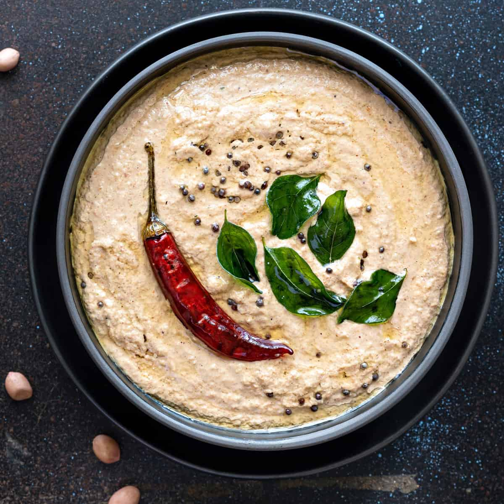

Peanut Chutney

Peanut chutney is a mildly spicy chutney side dish, originating from the Indian subcontinent,
that can be used with several snack foods and breakfast foods. I would like to introduce my Mom's chutney
recipe in this article.
- Prep: 20 mins
- Cook: 10 mins
- Serving: Depends on how much you made.
Ingredients
- Peanuts: 250 grams
- Garlic: 5 cloves
- Salt: 1.5 tablespoon
- Green chilli pepper: 5
- Tamarind: 4
- White chana dal: 1 teaspoon
- Cumin: 1 teaspoon
- Mustard seeds: 1 teaspoon
- Kadipatta (Curry leaves): 5 leaves
Directions
- Roast the peanuts in a pan and remove the skin as much as you can.
- Shallow fry the chllies in cooking oil. This oil is to be used later.
- Put the peanuts, garlic cloves, tamarind, chilli, white chana dal, salt into a blender and grind them to form a paste. Dilute it a little bit with water.
- In the oil from step 2, put cumin, mustard seeds, and when they start popping put in the kadipatta (curry leaves) and after 10 secons instantly put this into the chutney mixture.
- Serve with Idlis or whatever.